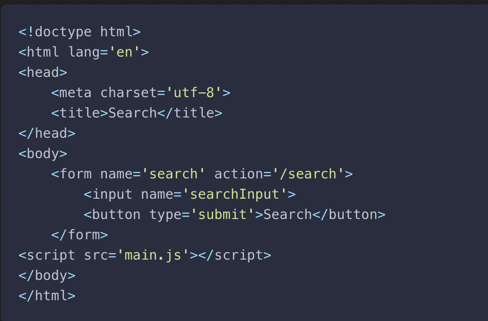

Ch 8: Forms
Forms
Forms are a method that are used commonly in web pages. Forms are everywhere and most of us use them on our favorite sites.
Forms use the element, form inside < >. The form element contains form controls such as input fields, select menus and buttons.
When a form is submitted it will be sent to a server where it will be processed with PHP or Ruby, two back end programming languages. But it is becoming more and more popular to process that information with JS a front end language before being sent to the server.
A Searching Example
 Simple Form ExampleThis form has a name attribute of search, and it also contains two form controls-and input field and a button. The input field allows the user to search for info, and the button allows the user to submit the query.
Accessing Form Elements
DOM had a property called document.forms which returned a collection of HTML forms into the document in the order they appeared in the markup.

Form Properties and Methods
Form Objects have many useful properties and methods which can be used to interact with forms.
- form.submit()
- form.reset()
- form.action
Submitting a Form
Most important form event, this event occurs when the form is submitted.
Form Controls
- input
- select
- textarea
- button
Input Fields
Input Fields are the most common types of form control, but there are several categories for input fields.
Text Input Fields
Default type of input field is the text input field. This is used for a short piece of text, such as a username.
The type='text' attribute isn't required.But it is advised to be used. It helps with readability, maintenance and future-proofing.
Password Input Fields
input type='password' is used to enter sensitive information such as passwords. The characters will be concealed when they are entered into this field.
Checkbox Input Fields
input type='checkbox' is used to select different options, such as checked (true) or unchecked (false). The user may select more than one checkbox from the list of options.
Radio Button Input Fields
input type='radio' is used for the user to choose only one option from the list. Usually a short list of options.
Hidden Input Fields
input type='hidden' this type of field isn't displayed by the browser, but is does have a value when submitted.
File Input Fields
input type='file' this allows you to upload files.
Other Input Types
There are many new imput types with HTML5 such as number, tel and color.
Text Area
the textarea element is used to allow the user to enter multiple lines of text such as a comment or blog post.
Form Validation
Form validation is the porcess of checking whether there is missing information for information input incorrectly.
Examples
- A required field is completed
- An email address is valid
- A number is entered when numerical data is required
- A password is at least a minimum number of characters
Validation can happen on the client side using JS as well as on the other side. JS shouldn't be relied on to validate the data before it is saved to a database.
Disabling the Submit Button
Another useful technique that can aid usability is to disable the submit button if there are errors on the form. If the submit button is disabled then no action is taken when it’s clicked. Most browsers will also display it in a lighter color to indicate that it cannot be clicked on. This prevents users from submitting a form containing any errors. A submit button can be disable by added the disabled attribute to the input element